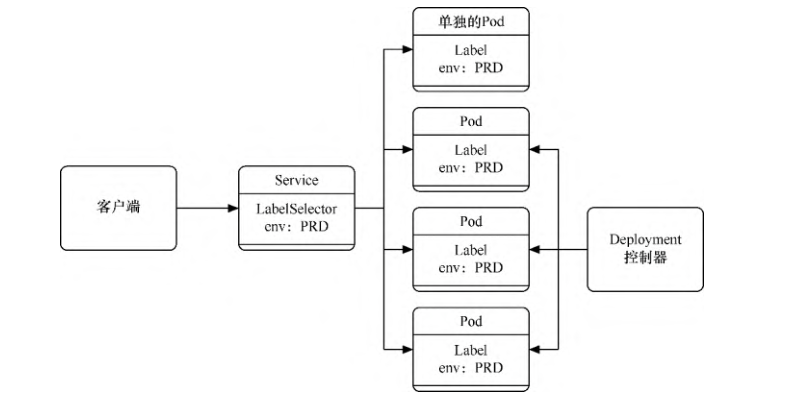

Contents
资源管理-标签、选择器及注解¶
上面我们讨论了命名空间，它主要用于实现多租户的资源隔离。
在同一个命名空间下，还可以对资源进行更细粒度的划分，对各个资源的身份进行标识（例如，可以区分各个应用的版本、层级、环境等），可以使用标签（label）来区分这些资源。
通过标签选择器（selector），我们可以快速查找具备指定标签值的资源，或者将某些高层Kubernetes资源通过标签条件关联到低层资源。
注解（annotation）也是一种类似标签的机制。相比标签，注解更自由，可以包含少量结构化数据。一般来说，注解只是向对象中添加更多信息的一种方式，并没有实际功能。
1. 标签¶
Kubernetes中的标签是一种语义化标记标签，可以附加到Kubernetes对象上，并对它们进行标记或划分。如果要针对不同的实例进行管理或路由，就可以用标签来进行选择。
标签的形式是键值对，每个资源对象都可以拥有多个标签，但每个资源对象对于每个键都只能拥有一个值。
标签的使用非常灵活，可以使用开发阶段、可访问性级别、应用程序版本等标准对各个对象进行分类。
对于每一种资源对象，都可以设置标签。方法是在模板中的metadata属性中设置，如下所示。
metadata:
labels: #标签列表，可定义多个标签的键/值对
key1: value1
key2: value2
......
keyN: valueN
对于已有资源，可以通过以下命令为其创建或删除标签。
$ kubectl label {资源类型} {资源名称} {标签名}={标签值}
$ kubectl label {资源类型} {资源名称} {标签名}-
以下是一些标签的应用场景。
根据发布版本划分为release: beta、release: stable、release:canary。
根据环境划分为 environment: dev、environment: qa、environment: production。
根据应用层级划分为tier: frontend、tier: backend、tier: cache。
根据用户群划分为partition: customerA、partition: customerB。
根据维护频率划分为track: daily、track: weekly。
为了定义一个带标签的Pod，首先，通过以下命令创建examplepodforlabel.yml文件。
examplepodforlabel.yml
apiVersion: v1
kind: Pod
metadata:
name: examplepodforlabel
labels:
environment: production
app: nginx
release: stable
tire: backend
spec:
containers:
- name: nginx
image: nginx:1.7.9
ports:
- containerPort: 80
运行以下命令，通过模板创建Pod。
$ kubectl apply -f examplepodforlabel.yml
接下来，通过$ kubectl describe pod examplepodforlabel命令查看Pod的详细信息，可以发现Pod已成功指定标签
$ kubectl describe pod examplepodforlabel
Name: examplepodforlabel
Namespace: default
Priority: 0
Node: gitee-k8s-w17/192.168.1.126
Start Time: Tue, 19 Apr 2022 15:16:23 +0800
Labels: app=nginx
environment=production
release=stable
tire=backend
......
2. 选择器¶
通过标签选择器，可以快速查找具备指定标签值的资源，如通过命令查找指定资源。在查询时应带上“-l”参数，后面带上选择器表达式。
在查询时可以使用=（或==）、!=操作符，使用逗号可分隔并连接多个表达式以进行匹配。
例如，可以使用以下命令查询environment标签不为dev、tire标签为backend的所有Pod。
$ kubectl get pods -l environment!=dev,tire=backend
NAME READY STATUS RESTARTS AGE
examplepodforlabel 1/1 Running 0 89s
还可以使用in、notin等方式进行查询。在使用这种方式时需要将选择器表达式放置在单引号之间，使用逗号分隔并连接多个表达式进行匹配。例如，可以使用以下命令查询environment标签的取值在production和dev之间且tire标签取值不在frontend中的所有Pod。
$ kubectl get pods -l 'environment in (production,dev),tire notin (frontend)'
NAME READY STATUS RESTARTS AGE
examplepodforlabel 1/1 Running 0 4m3s
还可以使用!{label}、{label}等方式进行查询。如果使用!{label}，需要将选择器表达式放置在单引号之间，使用逗号分隔并连接多个表达式进行匹配。例如，可以使用以下命令查询带environment标签（任何值皆可）但不带deadline标签的所有Pod。
$ kubectl get pods -l 'environment,!deadline'
NAME READY STATUS RESTARTS AGE
examplepodforlabel 1/1 Running 0 3m22s
如果查询时标签与资源不匹配，则查询结果为空
$ kubectl get pods -l a=b,b=c,'evn in (abc)'
No resources found in default namespace.
标签选择器也可以将某些高层Kubernetes资源通过标签条件关联到低层资源。接下来分别介绍这些场景的用法。
每种基于控制器的对象都可以使用标签来识别需要操作的Pod。Job、Deployment及DaemonSet等控制器可以在控制器模板的spec属性中指定选择器，以查找符合条件的Pod。示例如下。
selector:
matchLabels:
app: jekins
release: stable
matchExpressions:
- {key: tier, operator: In, values: [backend]}
- {key: environment, operator: NotIn, values: [dev,qa]}
- {key: track, operator: Exists}
- {key: deadline, operator: DoesNotExist}
配置上述选择器的控制器将会选取的Pod满足以下条件。
app标签为jekins，release标签为stable，tier标签在backend中取值，environment标签取值不介于dev和qa，存在track标签以及不存在deadline标签。
除了控制器外，Service还必须使用标签选择器才能确定应该将请求路由到哪些后端Pod。示例如下。
kind: Service
apiVersion: v1
metadata:
name: servicedemo
spec:
selector:
env: PRD
ports:
....
如图所示，这个Service将会定位所有标签满足evn=PRD的Pod，将其添加到自己的Endpoint列表中，无论是单个Pod还是由控制器托管的Pod。
Service通过标签匹配Endpoint
在创建PVC时，除了可以用storageClassName以外，还可以用标签来匹配对应的PV。示例如下。
apiVersion: v1
kind: PersistentVolume
metadata:
name: testPV
labels:
pvnumber: pv001
spec:
capacity:
storage: 1Gi
accessModes:
- ReadWriteOnce
storageClassName: testing
---
apiVersion: v1
kind: PersistentVolumeClaim
metadata:
name: testPVC
spec:
accessModes:
- ReadWriteOnce
resources:
requests:
storage: 1Gi
storageClassName: testing
selector:
matchLabels:
pvnumber: pv001
在创建PVC时会自动寻找storageClassName为testing且pvnumber标签为pv001的PV并进行绑定。
3. 注解¶
注解也是一种类似标签的机制。相对于标签，注解更自由，可以包含少量结构化数据。注解不用于识别和选择对象，只是向对象中添加更多信息的一种方式，只起说明作用并没有实际功能。
同标签一样，对于每一种资源对象都可以设置注解，在模板的metadata属性中设置即可。
为了定义一个带注解的Pod，首先，通过命令创建examplepodforannotation.yml文件。
examplepodforannotation.yml
apiVersion: v1
kind: Pod
metadata:
name: examplepodforannotation
annotations:
devteam: 'Tiger Team'
phone: '999-888-77777'
howtouse: 'plz open this app and click....'
Gitrepository: 'https://github.com/xxxxx/project.git'
email: 'tigerteam@company.com'
spec:
containers:
- name: nginx
image: nginx:1.7.9
ports:
- containerPort: 80
运行以下命令，通过模板创建Pod。
$ kubectl apply -f examplepodforannotation.yml
接下来，通过$ kubectl describe pod examplepodforannotation命令查看Pod的详细信息，可以发现Pod已成功指定注解
$ kubectl describe pod examplepodforannotation
Name: examplepodforannotation
Namespace: default
Priority: 0
Node: gitee-k8s-w02/192.168.1.36
Start Time: Tue, 19 Apr 2022 15:49:11 +0800
Labels: <none>
Annotations: Gitrepository: https://github.com/xxxxx/project.git
devteam: Tiger Team
email: tigerteam@company.com
howtouse: plz open this app and click....
phone: 999-888-77777
Status: Running